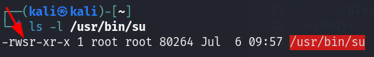
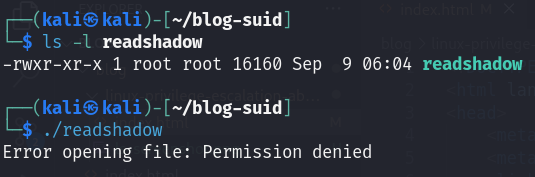
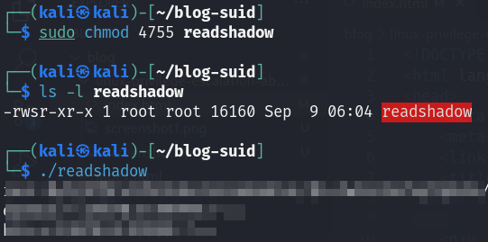

The setuid/setgid (SUID/SGID) bits allows the binary to run with the privileges of the user/group owner instead of those of the user executing it. You can spot these files by the 's' character instead of 'x' in owner permissions. Kali also highlights these files with a red color.

I will compile my own program which will simply read the /etc/shadow file. This demonstration will show you how the program will behave with and without the suid bit set.

I got permission denied message, because I ran the program as a normal user which don't have permission to read the shadow file.

After adding the suid bit, I am able to run the program successfully as a normal user. The program has been run in the context of the file owner (root in this case), who has privilege to read the shadow file.
You can add suid bit either by method above or using "chmod u+s filename".
You can add sgid by "chmod 2755 filename" or "chmod g+s filename".
You can get all files with suid bit set using "find / -perm /4000 2> /dev/null" command.
For finding all files with sgid use "find / -perm /2000 2> /dev/null".
"2> /dev/null" part of the command outputs all errors to null, so you don't have your screen fluttered by Permission denied messages.
If you have ran the find command on your Linux system, you can see some binaries which have suid or sgid set. That's completely ok, for example su and sudo commands require it to work correctly.
Security problems start when admin of the Linux machine add suid or sgid to binaries, which can be abused to accomplish privilege escalation.
For example, if admin set suid for python binary, you can easily get root shell.
Always look for binaries in the system with suid that you think shouldn't be freely run as root. For admins, think twice before setting suid to anything.
Thanks for reading, I hope you have found some useful information for your hacking adventures 🐱💻